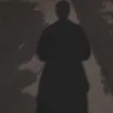

開辦星宇航空的契機:
2023年，星宇虛擬航空創辦人Aming因想破除台灣虛擬航空界令人詬病的現狀，創辦了星宇虛擬航空。
他和幾位志同道合的友人，一步一腳印創立了星宇虛擬航空。
隨著星宇虛擬航空（Starlux Virtual Airlines，於2023年正式啟航，Aming 和他的團隊開始了虛擬航空界的一場革命。他們不僅致力於提供最擬真的飛行體驗，甚至自行撰寫教材，讓每一位飛行員都能學習到如何真實的飛行。
Our Staff
Aming Wang
行政部門
